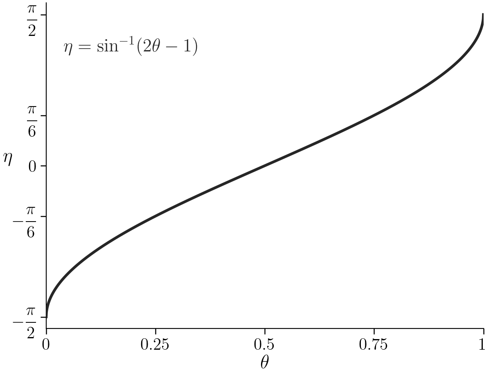
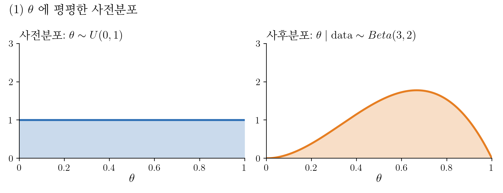
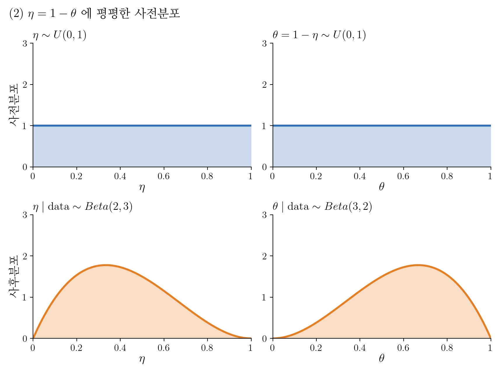
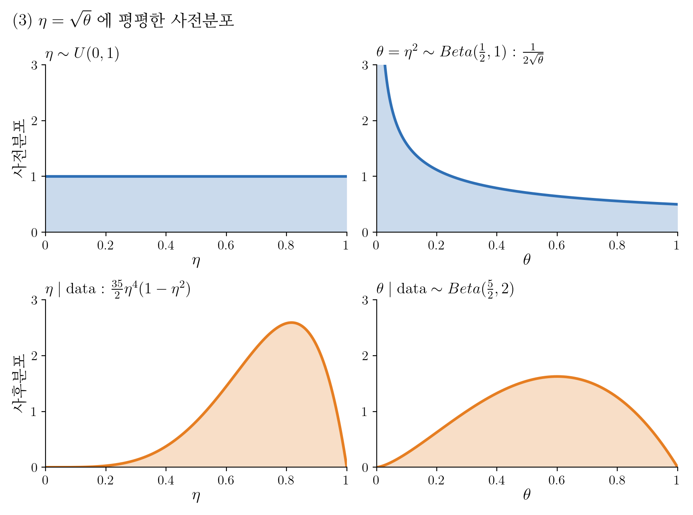

13wk-1: 베이지안의 역사 (1)
1. 강의영상
2. 가설검정 (2)
pass (숙제이후에 설명)
3. 네임드분포와 식별가능
- 네임드분포는 모수로 분포가 특정된다. 예를들어 베르누이는 \(P(X=1)\) 에 대응하는 성공확률 \(\theta=0.8\) 를 정하면 아래와 같은 확률분포표가 자동으로 정해진다.
| \(x\) | 0 | 1 |
|---|---|---|
| \(P(X=x)\) | \(0.2\) | \(0.8\) |
- 그런데 성공확률이 아니라 실패확률 \(\eta=1-\theta\)를 모수로 잡으면 어떨까? 별로 상관없을 것이다. 왜냐하면 실패확률을 정해도 똑같이 확률분포표를 특정할 수 있기 때문이다. 아래는 실패확률을 \(0.3\)으로 잡았을 때 특정되는 확률분포표의 예시이다.
| \(x\) | 0 | 1 |
|---|---|---|
| \(P(X=x)\) | \(0.3\) | \(0.7\) |
\(\theta\)를 모수로 설정하든 \(\eta\)를 모수로 설정하든 사실 상관이 없다. 왜냐하면 어떠한 \(\theta\)든지 대응하는 \(\eta\)가 반드시 하나만 있고 어떠한 \(\eta\)든지 대응하는 \(\theta\)가 반드시 하나만 있기 때문이다. (전단사) 따라서 \(\theta\)값을 정한 것은 사실 \(\eta\)값을 정한 것과 같고 \(\eta\)값을 정한 것은 사실 \(\theta\)값을 정한 것과 같다.
- 따라서 조금 괴팍한 사람이 성공확률 \(\theta\)대신에 아래의 식을 만족하는 \(\eta\)를 베르누이의 모수로 정한다 해도 상관없다.
\[\sin\eta = 2\theta - 1\quad 단, -\pi/2\leq \eta \leq \pi/2\]
정리하면 \(\eta=\sin^{-1}(2\theta-1)\) 이 되는데

그래프에서 보는것 처럼 이 상황 역시 “어떠한 \(\theta\)든지 대응하는 \(\eta\)가 반드시 하나만 있고 어떠한 \(\eta\)든지 대응하는 \(\theta\)가 반드시 하나만 있기” 때문이다. 아래는 \(\eta=\frac{\pi}{6}\) 로 잡았을 때 특정되는 확률분포표의 예시이다.
| \(x\) | 0 | 1 |
|---|---|---|
| \(P(X=x)\) | \(0.25\) | \(0.75\) |
- 베르누이에서는 \(\theta\)와 1:1변환관계에 있는 \(\eta\)는 모두 모수로 대신 사용할 수 있다. 왜냐하면 이러한 \(\eta\)는 여전히 베르누이의 확률분포표를 특정할 수 있기 때문이다. (그리고 이게 모수의 정의임)
- 네임드분포에서 모수를 바꿔 쓰는 경우는 흔하다.
- 정규분포는 \((\mu,\sigma^2)\)으로 특정하기도 하지만 \((\mu,\sigma)\)로 특정하기도 한다.
- 이변량정규분포는 평균벡터와 분산행렬 \(\left(\begin{bmatrix}\mu_1\\ \mu_2\end{bmatrix},\begin{bmatrix}\sigma_1^2 & \rho\sigma_1\sigma_2\\ \rho\sigma_1\sigma_2 & \sigma_2^2\end{bmatrix}\right)\)로 특정하기도 하지만 \((\mu_1,\mu_2,\sigma_1^2,\sigma_2^2,\rho)\)로 특정하기도 한다.
- 기하분포는 \(p\)로 특정하기도 하지만 \(1/p\)로 특정하기도 한다.
- 이번에는 베르누이 예제에서 성공확률 \(\theta\) 대신에 \(\eta=\theta(1-\theta)\)를 모수로 쓰려고 하는 상황을 생각해보자. 이는 모수의 역할을 할 수 없는데, 하나의 값 \(\eta=0.21\)은 아래의 두 개의 확률분포표에 대응되기 때문이다.
\(\theta=0.3\)
| \(x\) | 0 | 1 |
|---|---|---|
| \(P(X=x)\) | \(0.7\) | \(0.3\) |
\(\theta=0.7\)
| \(x\) | 0 | 1 |
|---|---|---|
| \(P(X=x)\) | \(0.3\) | \(0.7\) |
- 정리하면 베르누이에서 성공확률 \(\theta\) 를 아래와 같이 변환한
- \(\eta=1-\theta\)
- \(\eta=\sin^{-1}(2\theta-1)\) 단, \(-\pi/2\leq \eta \leq \pi/2\)
것들은 모두 모수 역할을 하지만 아래의 변환
- \(\eta=\theta(1-\theta)\)
는 모수 역할을 하지 못한다.
4. 객관적 베이지안
A. Intro (잡담)
- 이쯤에서 다시 생각하는 베이지안식 해석의 특징
- \(\theta\)에 대한 정보가 사후분포 그 자체로 정리된다.
- 주관적인 직관이 잘 맞으면 예측이 잘된다.
- 기타
- 정리하면 크게 보았을 때 베이지안식 해석이 가지는 장점은 (1) \(\theta\)를 확률변수로 보아서 생기는 이득 그자체 (2) 주관적인 직관이 의사결정에 도움이 되는 경우이다. (기타 장점은 여기서는 무시하자)
- 여기에서 (2)의 장점을 제외하고 (1)의 장점만을 보아도 베이지안식 해석은 매력적이다. 왜냐하면 \(P(\theta=0.5|data)\)라는 표현이라든가, \(P(H_0|data)\)라는 표현이라든가 \(P(-0.5<\theta<0.5|data)=0.95\)와 같은 표현이 가능한데, 이러한 표현들 자체가 우리의 직관과 매우 잘 맞기 때문이다. (각각에 대응하는 빈도주의 개념인 가능도, p-value, 신뢰구간은 잘못 이해하기 쉽다.)
- (2)의 장점은 포기하고 (1)의 장점만 취하려는 학자들을 객관적 베이지안이라 부른다. 베이지안의 계파를 정리하면
- (1)의 장점만 활용하는 객관적 베이지안
- (1),(2)의 장점을 모두 활용하는 주관적 베이지안
으로 정리할 수 있다. 물론 세부적으로는 더 복잡하지만 (경험적 베이지안 등도 있다) 무시하자.
- 객관적베이지안은 사전분포에 아무런 주관을 개입하지 않은 “무정보”를 오히려 선호한다. 발전 순서로 보면 객관적 베이지안 (그때는 이러한 이름으로 불리지 않음)의 시초격이 먼저 등장하였고 그 다음 주관적 베이지안이 등장하였다. 역사를 러프하게 정리하면 아래와 같다. (이러한 연대기를 만들기 싫었지만 이해를 위해서)
| 흐름 | 연도 | 인물 |
|---|---|---|
| 객관적 베이지안1 (역확률) 등장 | 1763 · 1774 | 베이즈 · 라플라스 |
| 객관적 베이지안1의 비판 | 1922 | 피셔 |
| 주관적 베이지안 등장 | 1926 · 1929 | 램지 · 드 피네티 |
| 확률의 엄밀한 정의 정립 | 1933 | 콜모고로프 |
| 객관적 베이지안2 등장 | 1939 | 제프리스 |
현재 주류는 객관적 베이지안
B. 피셔: 무정보라는 개념은 없다.
- 피셔는 초기 객관적베이지안1의 논리전개를 신랄하게 비판했다. (왜 그랬을까?)
# 예제1
(1) 동전을 3번 던져서
1, 1, 0을 얻었다. 1이 나올 확률 \(\theta\)에 대한 추정을 하고자 한다. 추정을 위해 빈도주의는 최대가능도추정량을, 베이지안은 사후분포를 내세운다. 이때 베이지안은 어떠한 주관도 개입하지 않고 데이터만 보고 판단하기 위해서 “\(\theta\)에 대한 사전정보가 아무것도 없음”을 가정한다. 즉 아래를 가정한다.
- \(\theta\sim U(0,1)\)
- \(X_1,X_2,X_3\mid\theta\overset{i.i.d.}{\sim}Ber(\theta)\)
빈도주의와 베이지안추정을 비교하라.
(풀이)
빈도주의: 최대가능도 추정값은 \(\hat{\theta}=\frac{2}{3}\)이다.
베이지안: \(\theta\)의 사후분포는 \(Beta(3,2)\)이다.
(2) 동전을 3번 던져서
1, 1, 0을 얻었다. 이번에는 0이 나올 확률 \(\eta=1-\theta\)를 모수로 보고 \(\eta\)에 대한 추정을 하고자 한다. 이번에도 베이지안은 어떠한 주관도 개입하지 않고 데이터만 보고 판단하기 위해서 “\(\eta\)에 대한 사전정보가 아무것도 없음”을 가정한다. 즉 아래를 가정한다.
- \(\eta\sim U(0,1)\)
- \(X_1,X_2,X_3\mid\eta\overset{i.i.d.}{\sim}Ber^\star(\eta)\)
이는 아래로 바꿔 생각할 수 있다.
- \(\eta\sim U(0,1)\)
- \(\theta= 1-\eta\)
- \(X_1,X_2,X_3\mid\theta\overset{i.i.d.}{\sim}Ber(\theta)\)
빈도주의와 베이지안추정을 비교하라.
(풀이)
빈도주의: \(\theta\)의 최대가능도 추정값은 \(\hat{\theta}=\frac{2}{3}\)이다. 따라서
\[\hat{\eta}=\widehat{1-\theta}=1-\hat{\theta}=\frac{1}{3}\] 이다.
베이지안: \(\eta\)의 사후분포는 \(Beta(2,3)\)이다.
(분석)
\(\eta\)의 사후분포가 \(Beta(2,3)\)이다. 그러면 \(\theta=1-\eta\)의 사후분포는 무엇일까? 수리통계학을 배웠다면 아래와 같이 풀 수 있을 것이다.
\(\eta\mid\text{data}\sim Beta(2,3)\) 의 밀도는
\[f_{\eta}(y)=\frac{1}{B(2,3)}y(1-y)^2=12y(1-y)^2,\quad 0<y<1\]
이다. \(\theta=1-\eta\) 는 1:1 변환이고 역변환은 \(\eta=1-\theta\), 야코비안은 \(\left|\frac{d\eta}{d\theta}\right|=|-1|=1\) 이다. 따라서 \(\theta\mid\text{data}\) 의 밀도는
\[f_{\theta}(t)=f_{\eta}(1-t)\left|\frac{d\eta}{d\theta}\right|=12(1-t)t^2\cdot 1=12t^2(1-t),\quad 0<t<1\]
이다. 이는 \(Beta(3,2)\) 의 밀도이므로 \(\theta\mid\text{data}\sim Beta(3,2)\) 이다.
아무튼 결론적으로 \(\theta\)의 사후분포는 \(Beta(3,2)\)를 따른다는 것이다. 이는 (1)의 결과와 일치한다.
(3) 1이 나올 확률이 \(\theta\) 인 동전을 3번 던져서 \(1,\ 1,\ 0\) 을 얻었다. 이번에는 \(\eta=\sqrt{\theta}\)를 모수로 생각하자. “\(\eta=\sqrt{\theta}\) 에 대해 아무것도 모른다” 를 \(\eta=\sqrt{\theta}\) 위에서 평평한 사전분포로 쓴다.
- \(\eta\sim U(0,1)\)
- \(X_1,X_2,X_3\mid\eta\overset{i.i.d.}{\sim}Ber^\star(\eta)\)
이는 아래로 바꿔 생각할 수 있다.
- \(\eta\sim U(0,1)\)
- \(\theta= \eta^2\)
- \(X_1,X_2,X_3\mid\theta\overset{i.i.d.}{\sim}Ber(\theta)\)
(풀이)
빈도주의: \(\theta\)의 최대가능도 추정값은 \(\hat{\theta}=\frac{2}{3}\)이다. 따라서
\[\hat{\eta}=\widehat{\sqrt\theta}=\sqrt{\hat{\theta}}=\sqrt{\frac{2}{3}}\] 이다.
베이지안: \(\eta\)의 사후분포는 \(\pi(\eta\mid\text{data})=\frac{35}{2}\eta^4(1-\eta^2)\ (0<\eta<1)\) 이다. 이름도 잘 모르는 분포이다.
(분석)
\(\eta\)의 사후분포가 \(\pi(\eta\mid\text{data})=\frac{35}{2}\eta^4(1-\eta^2)\ (0<\eta<1)\) 이다. 솔직히 이름도 모르는 분포다. 그러면 \(\theta=\eta^2\)의 사후분포는 무엇일까? 수리통계학을 배웠다면 아래와 같이 풀 수 있을 것이다.
\(\eta\)의 사후밀도함수는
\[f_{\eta}(y)=\frac{35}{2}y^4(1-y^2),\quad 0<y<1\]
이다. \(\theta=\eta^2\) 는 1:1 변환이고 역변환은 \(\eta=\sqrt{\theta}\), 야코비안은 \(\left|\frac{d\eta}{d\theta}\right|=\frac{1}{2\sqrt{\theta}}\) 이다. 따라서 \(\theta\)의 사후밀도함수는
\[f_{\theta}(t)=f_{\eta}(\sqrt{t})\left|\frac{d\eta}{d\theta}\right|=\frac{35}{2}t^2(1-t)\cdot\frac{1}{2\sqrt{t}}=\frac{35}{4}t^{3/2}(1-t),\quad 0<t<1\]
이다. 이는 \(Beta(5/2,2)\) 의 밀도이므로 \(\theta\mid\text{data}\sim Beta(5/2,2)\) 이다.
계산과정이 중요한 게 아니라 결과를 보자. (2)번과 다르게 \(\theta\mid\text{data}\sim Beta(3,2)\)가 아니다!
- 왜 이런 일이 생겨나는가?



(피셔의 비판)
주관적개입이 없는 사전분포, 즉 무정보사전분포라는 건 애초에 없다. 모수를 무엇으로 치느냐에 따라서 무정보의 기준이 달라지기 때문이다. \(\eta\)에 대하여 평평한 무정보분포를 준다고 한 것이 \(\theta\)에는 특별한 주관적 사전정보를 준 것과 같은 셈이 될 수 있다.
- 제 생각:
- 피셔는 모수라는 개념을 다시 본질적으로 생각했다. 피셔 이전에는 모수란 그냥 모집단의 참값이라고 생각했다. 피셔는 모수란 분포의 비밀을 담고 있는 진실 (그 진실을 알면 분포의 모든 것을 알 수 있는)에 가깝다고 생각했을 것이다. (이 논리로 치면 베르누이분포의 분산은 예전에는 모수라 불렀지만, 피셔의 방식으로 치면 모수가 아니다. 피셔는 이것을 모수의 함수라고 표현했다)
- 피셔에게 모수란 진실 그 자체이기 때문에 그것은 하나의 수를 지칭하는 게 아니다. (성공확률을 모수로 볼 수도 있고 실패확률을 모수로 볼 수도 있다, 마치 어떠한 진실을 한국어로 표현하든 영어로 표현하든 같듯이) 그 진실은 어떠한 면을 봐도 같아야 하는데 베이지안식 접근은 모수를 어떻게 잡느냐에 따라서 진실에 대한 다른 답을 준다.
- 따라서 피셔는 이러한 방식의 추정을 모수추정이라 인정할 수 없었던 것 같다.
(4) 1이 나올 확률이 \(\theta\) 인 동전을 3번 던져서 \(1,\ 1,\ 0\) 을 얻었다. 이번에는 \(\sin\eta=2\theta-1\) (단, \(-\pi/2\leq\eta\leq\pi/2\)) 을 만족하는 \(\eta\)를 모수로 생각하자. “\(\eta\) 에 대해 아무것도 모른다” 를 \(\eta\) 위에서 평평한 사전분포로 쓴다. (피셔가 실제로 든 예이다. Fisher, 1922, pp. 324–325)
- \(\eta\sim U(-\pi/2,\pi/2)\)
- \(X_1,X_2,X_3\mid\eta\overset{i.i.d.}{\sim}Ber^\star(\eta)\)
이는 아래로 바꿔 생각할 수 있다.
- \(\eta\sim U(-\pi/2,\pi/2)\)
- \(\theta=\frac{1+\sin\eta}{2}\)
- \(X_1,X_2,X_3\mid\theta\overset{i.i.d.}{\sim}Ber(\theta)\)
(풀이)
빈도주의: \(\theta\)의 최대가능도 추정값은 \(\hat{\theta}=\frac{2}{3}\)이다. 따라서
\[\hat{\eta}=\widehat{\sin^{-1}(2\theta-1)}=\sin^{-1}(2\hat{\theta}-1)=\sin^{-1}\frac{1}{3}\] 이다.
베이지안: \(\eta\)의 사후분포는 \(\pi(\eta\mid\text{data})=\frac{2}{\pi}(1+\sin\eta)^2(1-\sin\eta)\ (-\pi/2<\eta<\pi/2)\) 이다.
(분석)
\(\eta\)의 사후분포가 \(\pi(\eta\mid\text{data})=\frac{2}{\pi}(1+\sin\eta)^2(1-\sin\eta)\ (-\pi/2<\eta<\pi/2)\) 이다. 그러면 \(\theta=\frac{1+\sin\eta}{2}\)의 사후분포는 무엇일까? 수리통계학을 배웠다면 아래와 같이 풀 수 있을 것이다.
\(\eta\)의 사후밀도함수는
\[f_{\eta}(y)=\frac{2}{\pi}(1+\sin y)^2(1-\sin y),\quad -\frac{\pi}{2}<y<\frac{\pi}{2}\]
이다. \(\theta=\frac{1+\sin\eta}{2}\) 는 1:1 변환이고 역변환은 \(\eta=\sin^{-1}(2\theta-1)\), 야코비안은 \(\left|\frac{d\eta}{d\theta}\right|=\frac{1}{\sqrt{\theta(1-\theta)}}\) 이다. 따라서 \(\theta\)의 사후밀도함수는
\[f_{\theta}(t)=f_{\eta}(\sin^{-1}(2t-1))\left|\frac{d\eta}{d\theta}\right|=\frac{2}{\pi}(2t)^2(2-2t)\cdot\frac{1}{\sqrt{t(1-t)}}=\frac{16}{\pi}t^{3/2}(1-t)^{1/2},\quad 0<t<1\]
이다. 이는 \(Beta(5/2,3/2)\) 의 밀도이므로 \(\theta\mid\text{data}\sim Beta(5/2,3/2)\) 이다.
계산과정이 중요한 게 아니라 결과를 보자. 이번에도 \(\theta\mid\text{data}\sim Beta(3,2)\)가 아니다! 피셔는 이것을 “앞에서 얻은 것과 일관되지 않는 결과”라고 했다.